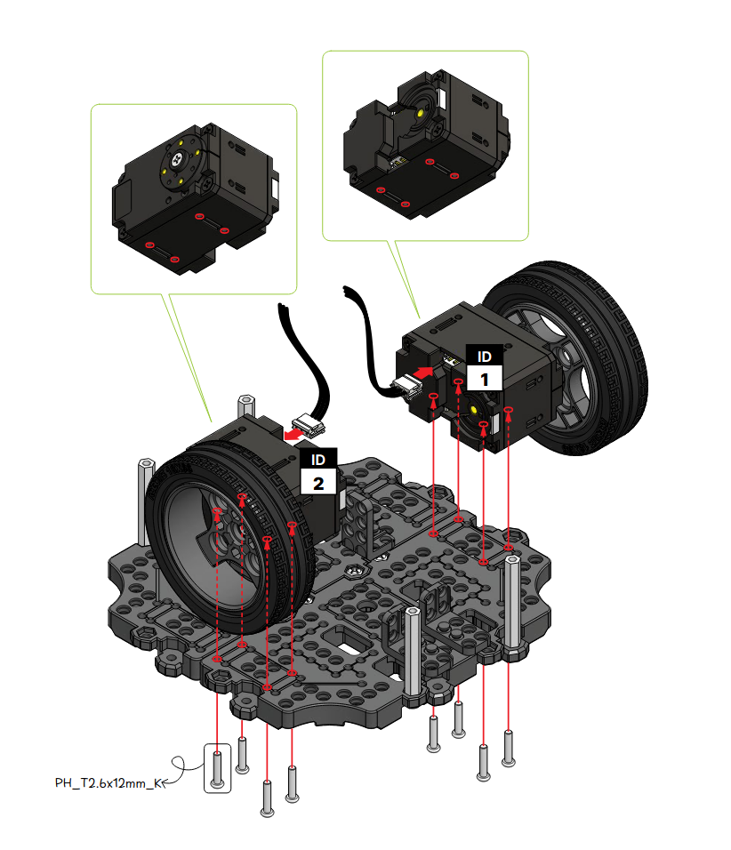
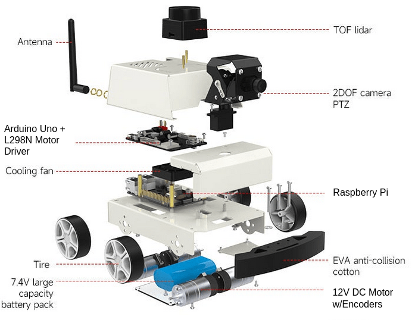

Hello, I'm Johnny Vang
Engineering portfolio showcasing work in robotics, computer vision, and software development, with an emphasis on system validation and real-world applications.
- All
- Mobile Robots
- Sensor Fusion
- Hardware Testing
- Computer Vision
- Web Applications
- ROS2

TurtleBot3 Sensors Validation
A ROS 2 (Jazzy) validation suite built to verify odometry, IMU, and LiDAR behavior before running SLAM or Nav2.
Includes tests for message timing, odom drift and accuracy, IMU bias/noise, and LiDAR stability and obstacle detection.

TurtleBot3 Motor Debugging Case Study
Root cause analysis of SLAM failure caused by incorrect Dynamixel motor placement
TurtleBot3 Motor Debugging Case Study
A robotics debugging case study showing how failed SLAM, localization instability, and incorrect motion behavior were traced back to improperly installed Dynamixel motors.
Highlights system validation across odometry, IMU, LiDAR, TF, and AMCL, ending in a mechanical root-cause fix by swapping the motor positions on the chassis.

Labubu Classifier
A Flask and PyTorch web application built to classify uploaded images as authentic Labubu or not.
Uses a fine-tuned ResNet18 model for binary image classification, with a lightweight deployment on Render and a simple real-time inference interface.

Hmonglish
A vocabulary-learning web application built with HTML, CSS, and vanilla JavaScript to help users study beginner Hmong words through interactive flashcards.
Includes category-based lessons, keyboard shortcuts, swipe navigation, a shuffle mode, and a toggle between White Hmong and Green Hmong.

DIY Differential Drive Robot
Arduino-based robot with encoders, motor control, and optical validation
DIY Differential Drive Robot
A custom-built robot platform using an Arduino Uno, DC motors with encoders, and an L298N motor driver to explore low-level motor control and feedback systems.
Includes encoder pulse tracking, time-based calibration, and an OpenCV + ArUco optical system to validate wheel rotation before future ROS 2 integration.